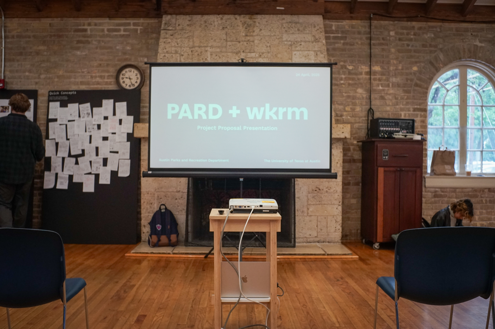
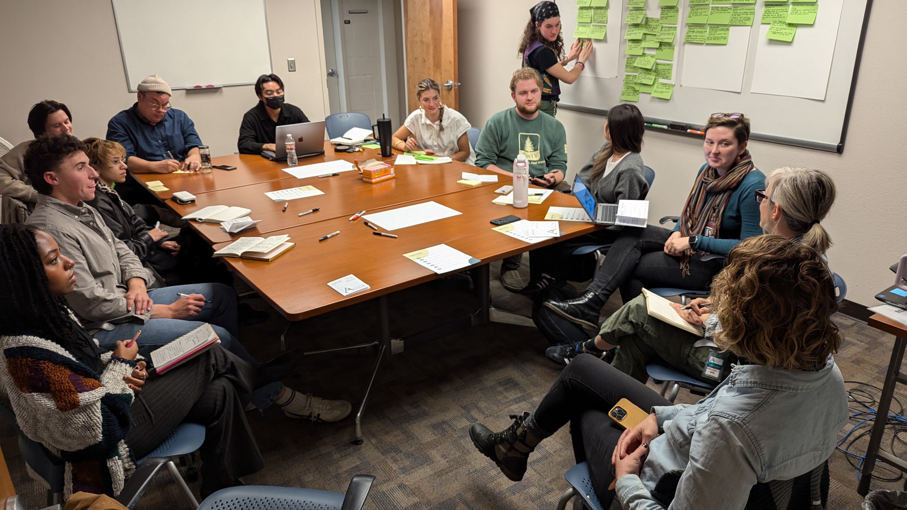
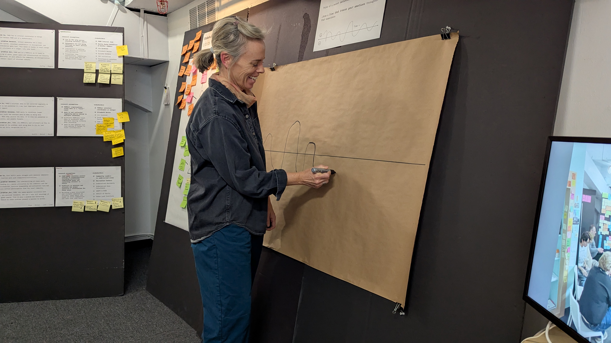
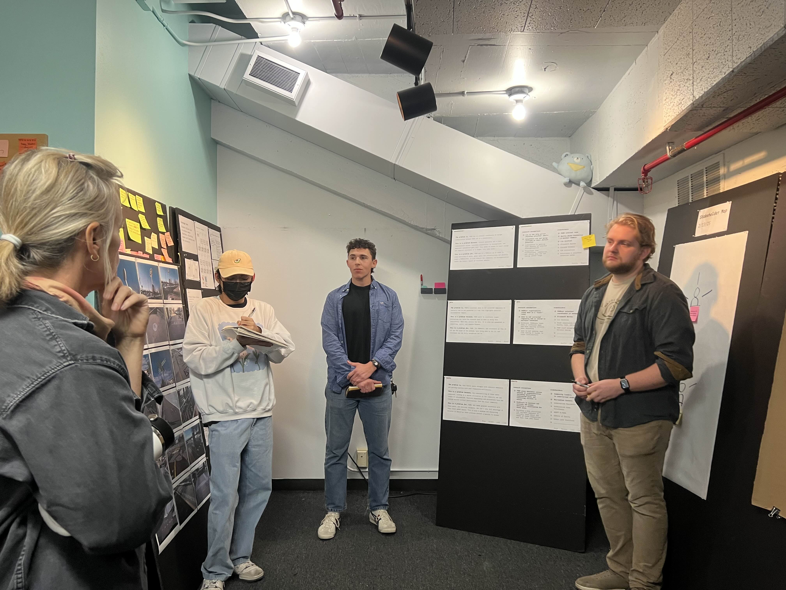
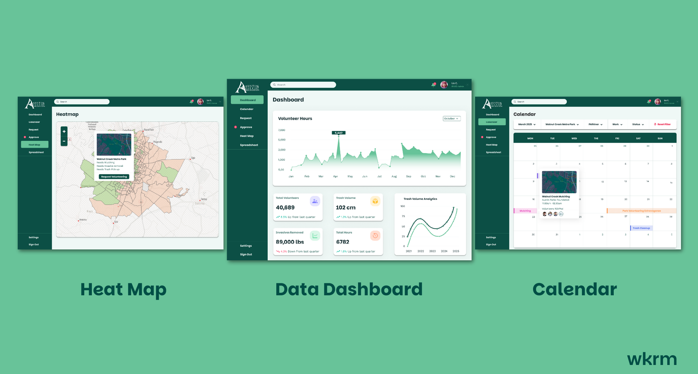
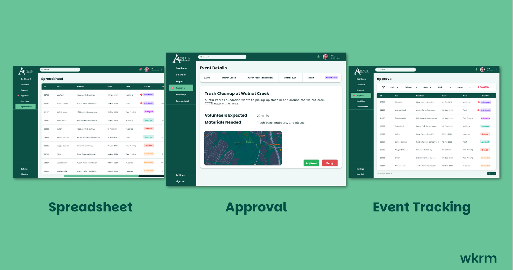
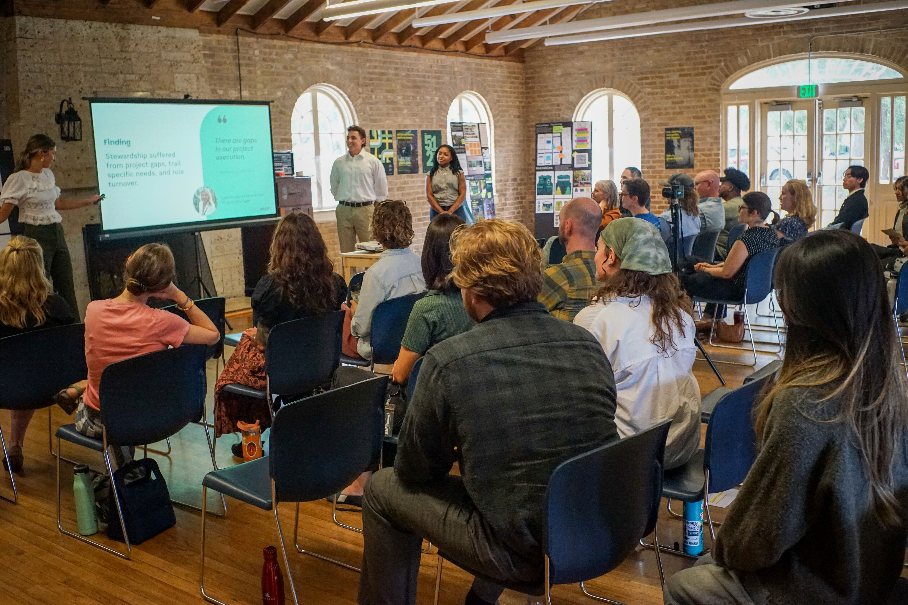
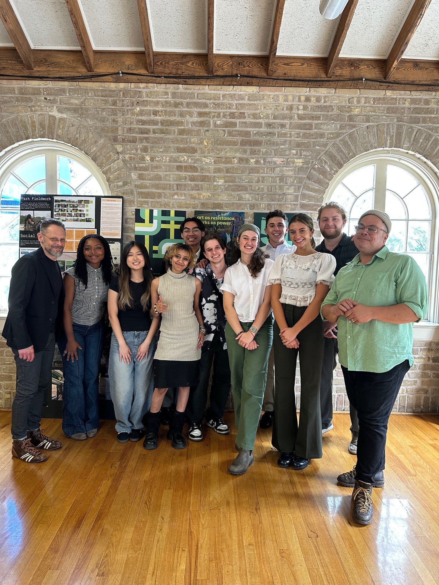

PARD + wkrm
My role: Dashboard Design, User Research & Synthesis, Presentation
Led dashboard design and user research for Austin Parks & Recreation’s volunteer coordination system. Conducted stakeholder interviews, in-the-field volunteering, and ecosystem mapping to uncover workflow breakdowns across divisions.
The Problem
PARD managed volunteers through scattered email chains, Wufoo forms, and informal networks. There was no centralized system — staff spent hours tracking sign-ups, hours went unreported, and underserved parks lacked visibility.


User Research
I co-led stakeholder interviews with PARD’s Community Services and Engagement teams, uncovering key workflow breakdowns. I also volunteered at “It’s My Park Day” to observe the check-in process firsthand — seeing where sign-ups stalled and how communication broke down in real time.


Dashboard Design
I designed a Figma prototype of a centralized dashboard focused on clarity and data visibility — with calendar views, shift tracking, and an equity heat map. I focused on limiting cognitive load, reducing navigation depth, and making data both useful and readable.



Outcome
We presented to PARD’s executive leadership, framing our work around four pillars: making volunteering visible, accessible, actionable, and engaging.

